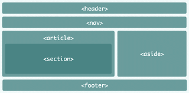

The float property is used for positioning and formatting content e.g. let an image float left to the text in a container. The float property can have one of the following values: • left - The element floats to the left of its container • right - The element floats to the right of its container • none - The element does not float (will be displayed just where it occurs in the text). This is default • inherit - The element inherits the float value of its parent The clear property can have one of the following values: • none - Allows floating elements on both sides. This is default • left - No floating elements allowed on the left side • right- No floating elements allowed on the right side • both - No floating elements allowed on either the left or the right side • inherit - The element inherits the clear value of its parent The most common way to use the clear property is after you have used a float property on an element.
position: static; HTML elements are positioned static by default. Static positioned elements are not affected by the top, bottom, left, and right properties. An element with position: static; is not positioned in any special way position: relative; An element with position: relative; is positioned relative to its normal position. Setting the top, right, bottom, and left properties of a relatively-positioned element will cause it to be adjusted away from its normal position. Other content will not be adjusted to fit into any gap left by the element. position: fixed; An element with position: fixed; is positioned relative to the viewport, which means it always stays in the same place even if the page is scrolled. The top, right, bottom, and left properties are used to position the element. A fixed element does not leave a gap in the page where it would normally have been located.
Metadata is data (information) about data. The tag provides metadata about the HTML document. Metadata will not be displayed on the page, but will be machine parsable. Meta elements are typically used to specify page description, keywords, author of the document, last modified, and other metadata. The metadata can be used by browsers (how to display content or reload page), search engines (keywords), or other web services. HTML5 introduced a method to let web designers take control over the viewport (the user's visible area of a web page), through the tag
The declaration must be the very first thing in your HTML document, before the html tag. The declaration is not an HTML tag; it is an instruction to the web browser about what version of HTML the page is written in. In HTML 4.01, the declaration refers to a DTD, because HTML 4.01 was based on SGML. The DTD specifies the rules for the markup language, so that the browsers render the content correctly. HTML5 is not based on SGML, and therefore does not require a reference to a DTD.


CSS selectors are used to "find" (or select) the HTML elements you want to style. We can divide CSS selectors into five categories: Simple selectors (select elements based on name, id, class) Combinator selectors (select elements based on a specific relationship between them) Pseudo-class selectors (select elements based on a certain state) Pseudo-elements selectors (select and style a part of an element) Attribute selectors (select elements based on an attribute or attribute value)
There are several different types of selectors in CSS.